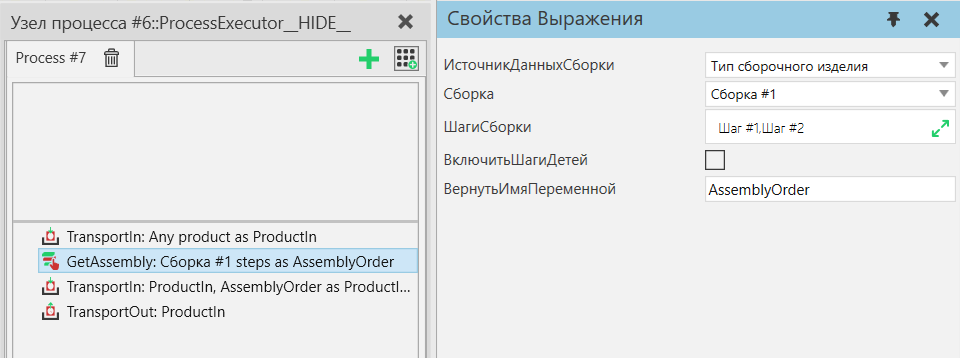
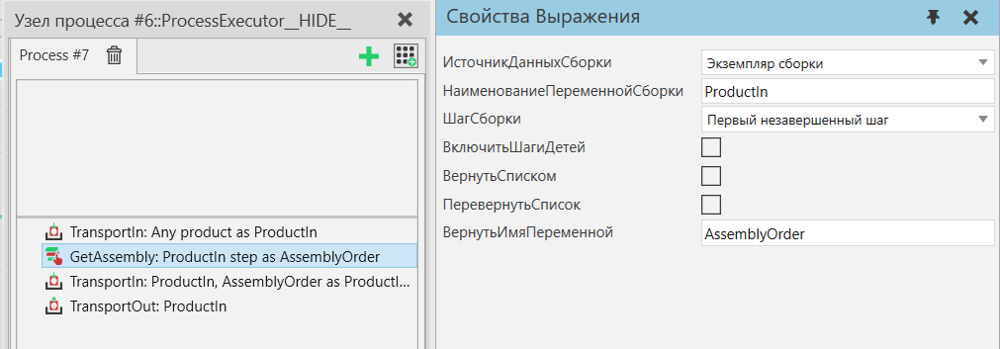

|
Создает объект «Порядок сборки», который определяет подмножество сборки, которое можно передать другим операторам для выполнения действий, специфичных для оператора, для выбранных шагов сборки. Все этапы сборки принадлежат Типу сборочного продукта, поэтому в Заказе на сборку также всегда указывается один Тип сборочного продукта.
ИсточникДанныхСборки - Тип сборочного изделия :
Порядок сборки, включая выбор типа продукта сборки и шага сборки, может оставаться неизменным на протяжении всей симуляции и использоваться повторно. Шаги сборки можно свободно выбирать из выбранного типа продукта сборки.

Рисунок 1. Пример процесса, в котором шаги сборки выбираются в порядке сборки, создается новый экземпляр сборки и выбранные шаги сборки заполняются оператором TransportIn. Наконец, созданный экземпляр сборки транспортируется к следующему процессу.
Источник Данных Сборки Экземпляр сборки :
Этот режим следует выбирать, если процессу необходимо обрабатывать меняющиеся типы экземпляров сборки или если экземпляры сборки имеют разные состояния завершения, когда они прибывают. Этот режим позволяет общий выбор одного шага сборки с использованием нескольких различных правил. Используйте этот режим, например, для полной сборки или разборки любого экземпляра сборки с помощью цикла или для создания универсальной реализации процесса, которая продвигает работу над экземпляром сборки на один шаг, а затем передает его вперед.

Рисунок 2. Пример процесса, в котором транспортируется экземпляр сборки, из него извлекается следующий незавершенный шаг сборки, затем этот шаг сборки заполняется TransportIn. Наконец, экземпляр сборки транспортируется к следующему процессу.
Название
|
Описание
|
ИсточникДанныхСборки
|
Режим ввода, определяющий, какие свойства следует использовать для генерации вывода.
Экземпляр сборки - Считайте данные из экземпляра продукта сборки.
Тип сборочного изделия - Считайте данные из Типа продукта сборки, определенного в макете.
|
ИмяПеременнойСборки
|
Наименование переменной процесса, из которой можно получить экземпляр сборки.
|
ШагиСборки
|
Режим выбора, определяющий, какой шаг должен быть выбран из экземпляра сборки.
Первый незавершенный шаг - Выберите первый этап сборки, хотя бы один из слотов которого заполнен, но не все.
Первый пустой шаг - Выберите первый этап сборки, ни один из слотов которого не заполнен.
Первый завершенный шаг - Выберите первый шаг сборки, все слоты которого заполнены.
Последний шаг с продуктами - Выберите последний шаг сборки, хотя бы один слот которого заполнен.
|
Сборка
|
Тип продукта сборки для использования в качестве источника данных и выбора шагов сборки.
|
ШагиСборки
|
Этапы сборки для включения в качестве «выбранных» в заказ на сборку.
|
ВключитьШагиДетей
|
Должны ли быть также включены все дочерние шаги выбранных шагов сборки.
|
ВернутьСписком
|
При значении True оператор выводит список ссылок на экземпляры продукта вместо создания заказа на сборку. Эти выходные данные можно использовать для проверки или управления экземплярами продукта, которые находятся в сборке, без их предварительного извлечения. Список создается в правильном порядке сборки сборочного типа продукта.
|
Обратный список
|
Определяет, должен ли список экземпляров продукта выводиться в обратном порядке, т. е. в порядке разборки типа сборки продукта. Применимо, только если для параметра ВернутьСписоком установлено значение True.
|
ВернутьИмяПеременной
|
Имя переменной процесса, используемой для хранения результата. Типом переменной будет либо Заказ на сборку, либо список Экземпляров продукта, в зависимости от выбора ВернутьСписоком.
|
|